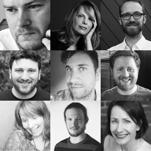

Conference
20 June at Scheltema
08:30 – registration in the foyer.
09:30 – Lodewijk “Low” Schutte, your friendly neighbourhood conference organiser, welcomes you to the conference with some opening remarks.
09:45 – Jamie Pittock has been developing web projects of all shapes and sizes with ExpressionEngine for almost a decade. Along the way he’s collected a big bundle of tips on how to get the most out of EE without losing your mind. In his Tales from the Trenches, he’s going to attempt to get through as many of them as he can in the time allotted.
10:30 – coffee break.
11:00 – When Désirée Battjes, co-owner of Leiden-based EE shop Kees™, started in this business, she thought that selling stuff was about bargaining, bluffing your way in and wearing a shiny necktie. Today she knows sales is about finding out how she can help people with things she and her colleagues love to do. She ended up liking sales, and would like to share how you can, too.
11:45 – In early 2011, John D Wells published an article demonstrating how to use the “partials” technique when building an ExpressionEngine website, sparking a breakthrough in DRY template development. He’ll dig into how partials are accomplished in EE, discuss common use cases, pitfalls & workarounds, and debate when it’s the right—and wrong—fit for you.
12:30 – buffet lunch provided in the foyer.
 13:30 –
Joel Bradbury has been building on ExpressionEngine for longer than he cares
to remember, and has had more exposure to the core than any sane man should. In
Forward the Foundation he’ll change how you think about base builds, reusability
and the underlying code that binds us all together.
13:30 –
Joel Bradbury has been building on ExpressionEngine for longer than he cares
to remember, and has had more exposure to the core than any sane man should. In
Forward the Foundation he’ll change how you think about base builds, reusability
and the underlying code that binds us all together.
14:15 – Your client project has launched! Now what? Marrije Schaake will talk about how to deal with Phase Two: requests for new features, the boredom of regular maintenance, and Emergencies When You Are on Holiday. Keep your clients happy while maintaining your own sanity, and a healthy bottom line.
15:00 – coffee break.
15:30 – ExpressionEngine is getting ever closer to becoming a true platform with lots of untapped potential. Ben Croker will demonstrate how you can get creative with EE and use it to go way beyond websites to powering web apps, mobile apps and other software and services.
16:15 – Leslie Doherty will explore creativity in development, or more specifically, in the developer community. By looking at other disciplines, we can redefine what it means to be a developer and open up its community to a wider reach; one that includes a variety of people and different minds, all valued for what they contribute.
17:00 – Stretch your legs while we set up the closing panel.
 17:15 – Q&A Panel, where all speakers will join in to answer your questions on development, design, business, and more. Ask your questions via email or Twitter!
18:00 – 20:00 After-party enjoy a drink and snack in the foyer.
The schedule is approximate and subject to change.